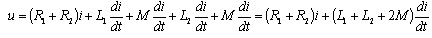
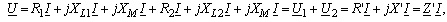
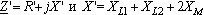

В соответствии с вторым законом Кирхгофа имеем

или в комплексной форме
 где
 - эквивалентные полное и индуктивное сопротивления двух индуктивно связанных катушек;
I = U/Z' - комплекс тока при согласном включении катушек.
Эквивалентная индуктивность катушек при их согласном включении